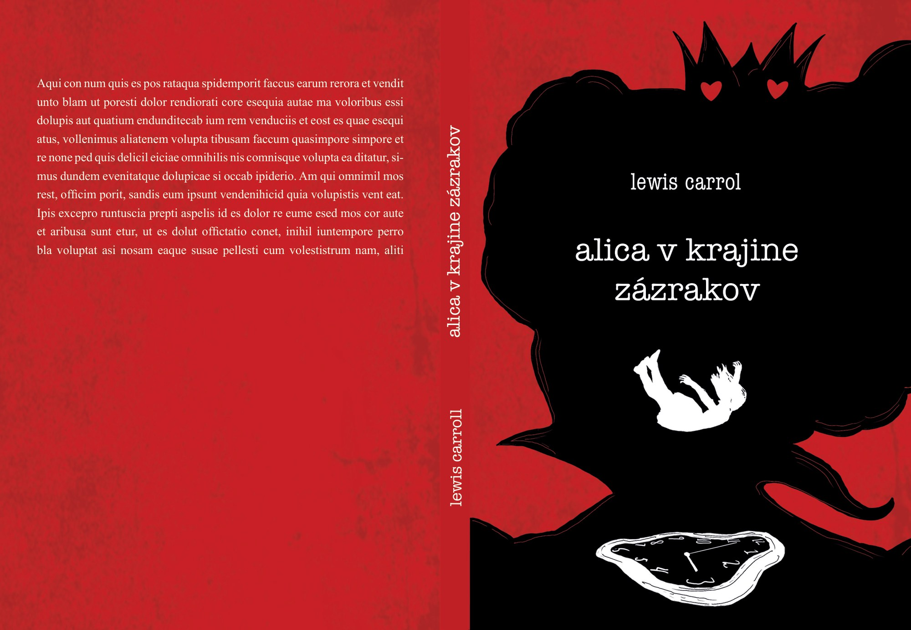
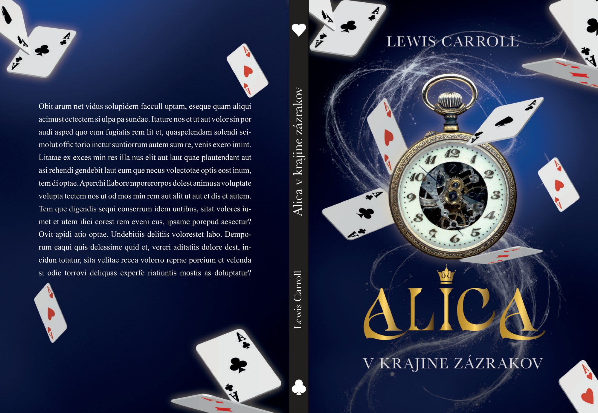
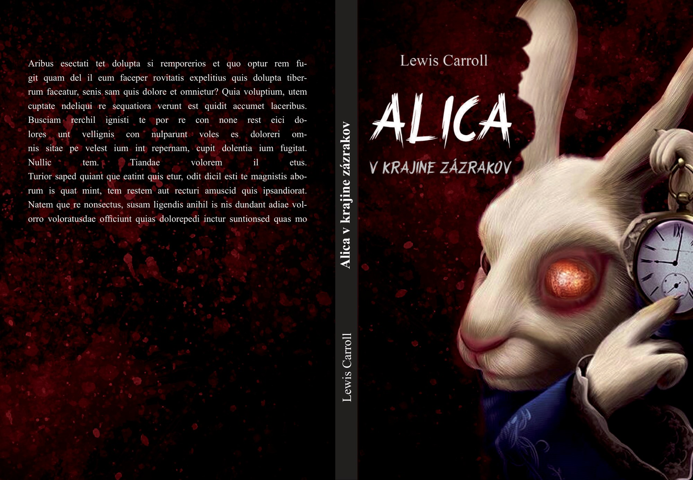

Viktória Mikušková
Knižný dizajn
obálky · sadzba · knižná ilustrácia · vizuálna identita
Výber z prác
viktoria-mikuskova.pages.dev
Knižný dizajn
obálky · sadzba · knižná ilustrácia · vizuálna identita


Názov vznikol brainstormingom cez slovenčinu a angličtinu až po skracovanie slov. Nook znamená kútik, miesto, kam sa človek na chvíľu stiahne a unikne. Presne to robí aj značka: symbol tvoria knihy na polici a názov je posadený za ne, takže vzniká kútik. Farebnosť som stavala na psychológii farieb, žltá za optimizmus a nádej, modrá za pokoj a stabilitu. Primárne písmo je IslaVistaDemo Regular, ktoré som zúžila, sekundárne Verdana. K základnému logotypu patrí aj variabilná verzia s názvom pod symbolom, čiernobiele prevedenie a slogan kde sa slová stretávajú. Všetko som zhrnula do dizajn manuálu ako napríklad ochrannú zónu, sieťovú konštrukciu, farebné profily RGB, CMYK a HEX, minimálne rozmery, zakázané verzie a vizualizácie na vizitke, hlavičkovom papieri, pere, záložke, plátennej taške a na fasáde predajne.




Detská obálka stavia na páde do králičej diery, ktorý pokračuje cez chrbát na zadnú stranu, kde sa diera zmení na šálku. Román je pokojný a vintage, silueta Alice v ornamentálnom ráme, modrá a tyrkysová. Psychologický thriller je čierno červený, padajúca silueta a za ňou nezreteľná Srdcová kráľovná. Fantasy stojí na starožitných vreckových hodinkách a lietajúcich kartách so zlatou typografiou na tmavomodrom prechode. Horor je realistický portrét zajaca s červeno žiariacim okom a hodinkami v ruke. Každý žáner má vlastnú farebnosť aj vlastné písmo, od Headinoru cez Zasliu a American Typewriter až po Dark Mystic a Strange Path.


Vymyslela som seriál o tom, čo sa deje za dverami zborovne na druhom stupni základnej školy. Šesť učiteľov, každý s jednou vlastnosťou, ktorá ho celého vysvetlí: prísny, mačkárka, fešák, vtipkár, supertréner a láskavá. Prísny je vysoký, zamračený starší pán, ktorého život nudí. Mačkárka je milá štyridsiatnička v babkovskom oblečení. Fešák sa o seba stará, ale nepredvádza sa. Vtipkár vyzerá skoro ako študent a učí cez hru. Supertréner neodmietne žiadnu výzvu a velí po vojensky, hoci vnútri je dobrák. Láskavá má rada deti a vždy pomôže. Každá postava má vlastnú siluetu, držanie tela, strih oblečenia a farebnú paletu, takže sa dá rozoznať aj v obryse. Postup šiel od skice celej zostavy cez jednotlivé postavy až po farebné palety, kde má každá vlastnú paletu oblečenia aj pleti.
Vizuálna identita, obaly, ilustrácia a tlačoviny. Celé projekty sú na webe.


Najbližšie mám ku knihám, k obálkam, sadzbe a k typografii, ktorá text nesie a neprekrýva. Hľadám miesto vo vydavateľstve, kde sa dá na knihe pracovať od rukopisu po tlačový hárok. Rada ukážem viac, aj rozpracované veci.